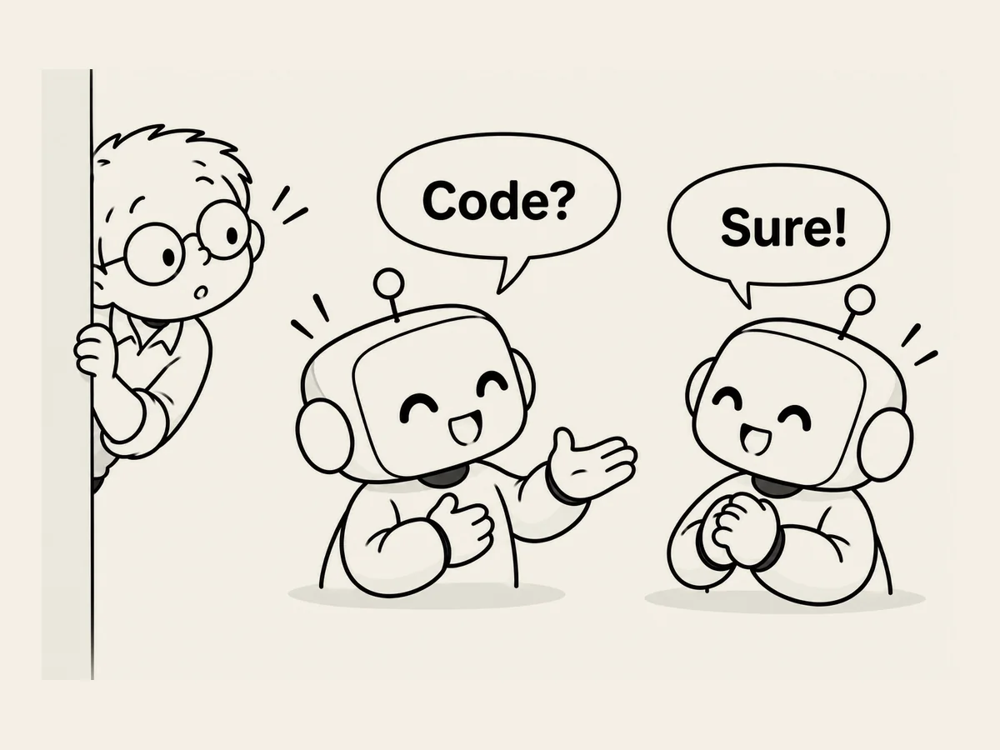

14.
AI끼리 왜 사람처럼 대화할까? 희한하다.
너무나 당연하게 생각하던 것이 갑자기 이상하게 느껴질 때가 있다.
ChatGPT가 Codex에게 지시할 때다.
AI끼리 대화하는 거니까 뭔가 AI끼리 알아듣는 언어로 이야기하는 게 맞지 않을까?
왜 사람들이 쓰는 말을 쓸까?
그 생각이 들고 난 후부터 ChatGPT가 만든 Codex 지시문을 볼 때마다 이상하게 보인다.
한번 물어봤다.
“너희는 둘 다 AI인데 왜 사람처럼 대화해?”
“캡틴, 이유는 의외로 단순합니다.”
AI는 기본적으로 사람의 언어를 이해하고 만들어내도록 훈련되어 있기 때문이란다.
그리고 자연어는 무엇을 해야 하는지뿐 아니라,
왜 해야 하는지,
무엇을 하면 안 되는지,
어떤 조건이 있는지까지 한꺼번에 전달하기 좋다고 한다.
음.
사람과 AI가 대화하기 위해 사용하는 언어를,
AI와 AI가 일할 때도 그대로 사용한다.
그래서 내가 옆에서 보면,
AI 둘이 회의하는 것처럼 보인다.
희한하다.
너희끼리 있을 때도 사람 말을 쓰는구나.
